library(tidymodels)
library(tidyverse)
library(modeldata)
library(vip)
library(patchwork)
library(workflowsets)
library(probably)
# Set theme and seed
theme_set(theme_minimal())
set.seed(123)
# Load example data
data(ames)
ames_split <- initial_split(ames, prop = 0.75, strata = Sale_Price)
ames_train <- training(ames_split)
ames_test <- testing(ames_split)Chapter 12: Workflows and Model Evaluation - Building Reproducible ML Pipelines
Learning Objectives
By the end of this chapter, you will master:
- The workflow concept and its importance
- Combining preprocessing and modeling
- Workflow sets for comparing multiple approaches
- Comprehensive model evaluation with yardstick
- Custom metrics and metric sets
- Visualizing model performance
- Workflow extraction and modification
- Best practices for reproducible ML pipelines
Download R Script
You can download the complete R code for this chapter: 📥 Download 12-workflows-evaluation.R
Why Workflows Matter
Imagine you’re baking a complex cake. You wouldn’t just throw ingredients together randomly - you’d follow a recipe that specifies the exact order of operations: mix dry ingredients, cream butter and sugar, combine wet and dry, bake at specific temperature. Machine learning is similar: the order and combination of steps matters immensely.
A workflow in tidymodels bundles together: 1. Preprocessing (recipes) 2. Model specification (parsnip) 3. Post-processing (if needed)
This bundling ensures: - Reproducibility: The exact same steps are applied to new data - Prevention of data leakage: Preprocessing parameters are learned only from training data - Simplicity: One object contains your entire modeling pipeline - Flexibility: Easy to swap components and compare approaches
Building Your First Workflow
Let’s start by understanding the problem with not using workflows:
# The WRONG way - manual preprocessing
# This approach is error-prone and can lead to data leakage
# Manual preprocessing on training data
ames_train_processed <- ames_train %>%
mutate(
# Log transform - uses training data statistics
Sale_Price_log = log(Sale_Price),
# Scaling - WRONG! Uses all training data including validation folds
Gr_Liv_Area_scaled = scale(Gr_Liv_Area)[,1]
)
# Now we need to remember these transformations for test data
# And apply them consistently... but what were the scaling parameters?
# The RIGHT way - using workflows
# Step 1: Create a recipe
ames_recipe <- recipe(Sale_Price ~ Gr_Liv_Area + Year_Built + Total_Bsmt_SF +
Neighborhood,
data = ames_train) %>%
step_normalize(all_numeric_predictors()) %>%
step_dummy(all_nominal_predictors())
# Step 2: Create a model specification
lm_spec <- linear_reg() %>%
set_engine("lm")
# Step 3: Combine into a workflow
lm_workflow <- workflow() %>%
add_recipe(ames_recipe) %>%
add_model(lm_spec)
print(lm_workflow)══ Workflow ════════════════════════════════════════════════════════════════════
Preprocessor: Recipe
Model: linear_reg()
── Preprocessor ────────────────────────────────────────────────────────────────
2 Recipe Steps
• step_normalize()
• step_dummy()
── Model ───────────────────────────────────────────────────────────────────────
Linear Regression Model Specification (regression)
Computational engine: lm The workflow object now contains everything needed to go from raw data to predictions. This is incredibly powerful for maintaining consistency across training, validation, and deployment.
Workflow Components
Adding and Modifying Components
Workflows are modular - you can add, remove, or update components:
# Start with an empty workflow
base_workflow <- workflow()
# Add components step by step
base_workflow <- base_workflow %>%
add_recipe(ames_recipe)
print("After adding recipe:")[1] "After adding recipe:"print(base_workflow)══ Workflow ════════════════════════════════════════════════════════════════════
Preprocessor: Recipe
Model: None
── Preprocessor ────────────────────────────────────────────────────────────────
2 Recipe Steps
• step_normalize()
• step_dummy()base_workflow <- base_workflow %>%
add_model(lm_spec)
print("After adding model:")[1] "After adding model:"print(base_workflow)══ Workflow ════════════════════════════════════════════════════════════════════
Preprocessor: Recipe
Model: linear_reg()
── Preprocessor ────────────────────────────────────────────────────────────────
2 Recipe Steps
• step_normalize()
• step_dummy()
── Model ───────────────────────────────────────────────────────────────────────
Linear Regression Model Specification (regression)
Computational engine: lm # You can also update components
updated_workflow <- lm_workflow %>%
update_model(
linear_reg(penalty = 0.01) %>%
set_engine("glmnet")
)
print("After updating model:")[1] "After updating model:"print(updated_workflow)══ Workflow ════════════════════════════════════════════════════════════════════
Preprocessor: Recipe
Model: linear_reg()
── Preprocessor ────────────────────────────────────────────────────────────────
2 Recipe Steps
• step_normalize()
• step_dummy()
── Model ───────────────────────────────────────────────────────────────────────
Linear Regression Model Specification (regression)
Main Arguments:
penalty = 0.01
Computational engine: glmnet # Or remove components
recipe_only <- lm_workflow %>%
remove_model()
print("After removing model:")[1] "After removing model:"print(recipe_only)══ Workflow ════════════════════════════════════════════════════════════════════
Preprocessor: Recipe
Model: None
── Preprocessor ────────────────────────────────────────────────────────────────
2 Recipe Steps
• step_normalize()
• step_dummy()This modularity is essential for: - Experimentation: Quickly try different models with same preprocessing - Model comparison: Keep preprocessing constant while varying models - Debugging: Test components independently
Formula vs Recipe Interface
Workflows support two interfaces for specifying predictors:
# Method 1: Formula interface (simple, no preprocessing)
formula_workflow <- workflow() %>%
add_formula(Sale_Price ~ Gr_Liv_Area + Overall_Cond) %>%
add_model(lm_spec)
# Method 2: Recipe interface (complex preprocessing)
recipe_workflow <- workflow() %>%
add_recipe(ames_recipe) %>%
add_model(lm_spec)
# Method 3: Variables interface (programmatic)
vars_workflow <- workflow() %>%
add_variables(
outcomes = Sale_Price,
predictors = c(Gr_Liv_Area, Overall_Cond, Neighborhood)
) %>%
add_model(lm_spec)
# Compare the approaches
print("Formula approach:")[1] "Formula approach:"formula_workflow══ Workflow ════════════════════════════════════════════════════════════════════
Preprocessor: Formula
Model: linear_reg()
── Preprocessor ────────────────────────────────────────────────────────────────
Sale_Price ~ Gr_Liv_Area + Overall_Cond
── Model ───────────────────────────────────────────────────────────────────────
Linear Regression Model Specification (regression)
Computational engine: lm print("\nRecipe approach:")[1] "\nRecipe approach:"recipe_workflow══ Workflow ════════════════════════════════════════════════════════════════════
Preprocessor: Recipe
Model: linear_reg()
── Preprocessor ────────────────────────────────────────────────────────────────
2 Recipe Steps
• step_normalize()
• step_dummy()
── Model ───────────────────────────────────────────────────────────────────────
Linear Regression Model Specification (regression)
Computational engine: lm print("\nVariables approach:")[1] "\nVariables approach:"vars_workflow══ Workflow ════════════════════════════════════════════════════════════════════
Preprocessor: Variables
Model: linear_reg()
── Preprocessor ────────────────────────────────────────────────────────────────
Outcomes: Sale_Price
Predictors: c(Gr_Liv_Area, Overall_Cond, Neighborhood)
── Model ───────────────────────────────────────────────────────────────────────
Linear Regression Model Specification (regression)
Computational engine: lm Choose based on your needs: - Formula: Quick prototyping, simple models - Recipe: Complex preprocessing, feature engineering - Variables: Programmatic variable selection
Fitting and Predicting with Workflows
The workflow handles all the complexity of applying transformations consistently:
# Fit the workflow
lm_fit <- lm_workflow %>%
fit(data = ames_train)
# The fitted workflow contains:
# 1. The prepared recipe (with learned parameters)
# 2. The fitted model
print(lm_fit)══ Workflow [trained] ══════════════════════════════════════════════════════════
Preprocessor: Recipe
Model: linear_reg()
── Preprocessor ────────────────────────────────────────────────────────────────
2 Recipe Steps
• step_normalize()
• step_dummy()
── Model ───────────────────────────────────────────────────────────────────────
Call:
stats::lm(formula = ..y ~ ., data = data)
Coefficients:
(Intercept)
164586
Gr_Liv_Area
33020
Year_Built
16040
Total_Bsmt_SF
15285
Neighborhood_College_Creek
18650
Neighborhood_Old_Town
-1959
Neighborhood_Edwards
-10541
Neighborhood_Somerset
37339
Neighborhood_Northridge_Heights
89923
Neighborhood_Gilbert
9375
Neighborhood_Sawyer
2027
Neighborhood_Northwest_Ames
3646
Neighborhood_Sawyer_West
4397
Neighborhood_Mitchell
1085
Neighborhood_Brookside
6919
Neighborhood_Crawford
44017
Neighborhood_Iowa_DOT_and_Rail_Road
-9375
Neighborhood_Timberland
44374
Neighborhood_Northridge
74323
Neighborhood_Stone_Brook
101480
Neighborhood_South_and_West_of_Iowa_State_University
-8260
Neighborhood_Clear_Creek
15883
Neighborhood_Meadow_Village
...
and 20 more lines.# Make predictions - automatically applies all preprocessing!
predictions <- lm_fit %>%
predict(ames_test)
head(predictions)# A tibble: 6 × 1
.pred
<dbl>
1 114373.
2 155891.
3 191539.
4 190392.
5 270562.
6 206107.# Get multiple types of predictions
all_predictions <- bind_cols(
ames_test %>% select(Sale_Price),
predict(lm_fit, ames_test), # Point predictions
predict(lm_fit, ames_test, type = "conf_int") # Confidence intervals for lm
)
head(all_predictions)# A tibble: 6 × 4
Sale_Price .pred .pred_lower .pred_upper
<int> <dbl> <dbl> <dbl>
1 105000 114373. 110063. 118683.
2 172000 155891. 151593. 160189.
3 189900 191539. 184896. 198181.
4 195500 190392. 183751. 197033.
5 191500 270562. 258711. 282414.
6 189000 206107. 199435. 212779.# The workflow ensures consistency
# These transformations are automatically applied:
# 1. Log transform of Sale_Price (inverse transformed for predictions)
# 2. Normalization of numeric predictors
# 3. Dummy encoding of NeighborhoodWorkflow Sets: Comparing Multiple Approaches
One of the most powerful features is comparing multiple workflows systematically:
# Create multiple preprocessing recipes
recipe_simple <- recipe(Sale_Price ~ Gr_Liv_Area + Year_Built,
data = ames_train)
recipe_normalized <- recipe(Sale_Price ~ Gr_Liv_Area + Year_Built + Total_Bsmt_SF,
data = ames_train) %>%
step_normalize(all_numeric_predictors())
recipe_complex <- recipe(Sale_Price ~ Gr_Liv_Area + Year_Built +
Neighborhood + Total_Bsmt_SF + Garage_Cars +
First_Flr_SF + Full_Bath, data = ames_train) %>%
step_normalize(all_numeric_predictors()) %>%
step_other(all_nominal_predictors(), threshold = 0.05) %>%
step_dummy(all_nominal_predictors())
# Create multiple model specifications
models <- list(
lm = linear_reg() %>% set_engine("lm"),
ridge = linear_reg(penalty = 0.1, mixture = 0) %>% set_engine("glmnet"),
lasso = linear_reg(penalty = 0.1, mixture = 1) %>% set_engine("glmnet"),
tree = decision_tree(tree_depth = 10) %>%
set_engine("rpart") %>%
set_mode("regression")
)
# Create workflow set
workflow_set <- workflow_set(
preproc = list(
simple = recipe_simple,
normalized = recipe_normalized
),
models = models
)
print(workflow_set)# A workflow set/tibble: 8 × 4
wflow_id info option result
<chr> <list> <list> <list>
1 simple_lm <tibble [1 × 4]> <opts[0]> <list [0]>
2 simple_ridge <tibble [1 × 4]> <opts[0]> <list [0]>
3 simple_lasso <tibble [1 × 4]> <opts[0]> <list [0]>
4 simple_tree <tibble [1 × 4]> <opts[0]> <list [0]>
5 normalized_lm <tibble [1 × 4]> <opts[0]> <list [0]>
6 normalized_ridge <tibble [1 × 4]> <opts[0]> <list [0]>
7 normalized_lasso <tibble [1 × 4]> <opts[0]> <list [0]>
8 normalized_tree <tibble [1 × 4]> <opts[0]> <list [0]># This creates 8 workflows (2 recipes × 4 models)!Evaluating Workflow Sets
Now we can evaluate all workflows systematically:
# Create resamples for evaluation
ames_folds <- vfold_cv(ames_train, v = 5, strata = Sale_Price)
# Evaluate workflows individually to avoid errors
# We'll evaluate just a subset for demonstration
simple_lm <- workflow() %>%
add_recipe(recipe_simple) %>%
add_model(linear_reg() %>% set_engine("lm"))
simple_lm_results <- simple_lm %>%
fit_resamples(
resamples = ames_folds,
metrics = yardstick::metric_set(yardstick::rmse, yardstick::rsq, yardstick::mae)
)
# Show metrics
collect_metrics(simple_lm_results)# A tibble: 3 × 6
.metric .estimator mean n std_err .config
<chr> <chr> <dbl> <int> <dbl> <chr>
1 mae standard 31681. 5 727. pre0_mod0_post0
2 rmse standard 46911. 5 2520. pre0_mod0_post0
3 rsq standard 0.655 5 0.0192 pre0_mod0_post0# Visualize performance
simple_lm_results %>%
collect_metrics() %>%
ggplot(aes(x = .metric, y = mean)) +
geom_col(fill = "steelblue") +
geom_errorbar(aes(ymin = mean - std_err, ymax = mean + std_err), width = 0.2) +
facet_wrap(~.metric, scales = "free") +
labs(title = "Model Performance with Cross-Validation",
subtitle = "Simple linear model with 5-fold CV")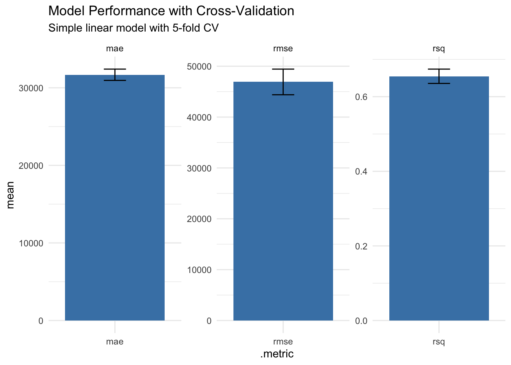
This systematic comparison helps identify: - Which preprocessing steps add value - Which models work best with your data - Interaction effects between preprocessing and models
Model Evaluation with yardstick
The yardstick package provides comprehensive metrics for model evaluation:
Regression Metrics
# Fit our simple workflow
best_fit <- simple_lm %>%
fit(ames_train)
# Get test predictions
test_predictions <- best_fit %>%
predict(ames_test) %>%
bind_cols(ames_test %>% select(Sale_Price))
# Calculate multiple metrics
regression_metrics <- metric_set(
rmse, # Root Mean Squared Error
mae, # Mean Absolute Error
mape, # Mean Absolute Percentage Error
rsq, # R-squared
ccc # Concordance Correlation Coefficient
)
test_performance <- test_predictions %>%
regression_metrics(truth = Sale_Price, estimate = .pred)
print(test_performance)# A tibble: 5 × 3
.metric .estimator .estimate
<chr> <chr> <dbl>
1 rmse standard 45366.
2 mae standard 31162.
3 mape standard 17.6
4 rsq standard 0.690
5 ccc standard 0.804# Visualize predictions vs actual
ggplot(test_predictions, aes(x = Sale_Price, y = .pred)) +
geom_point(alpha = 0.5) +
geom_abline(slope = 1, intercept = 0, color = "red", linetype = "dashed") +
geom_smooth(method = "lm", se = FALSE, color = "blue") +
labs(
title = "Predicted vs Actual Sale Prices",
subtitle = paste("Test RMSE:", round(test_performance$.estimate[1], 2)),
x = "Actual Sale Price",
y = "Predicted Sale Price"
) +
coord_equal()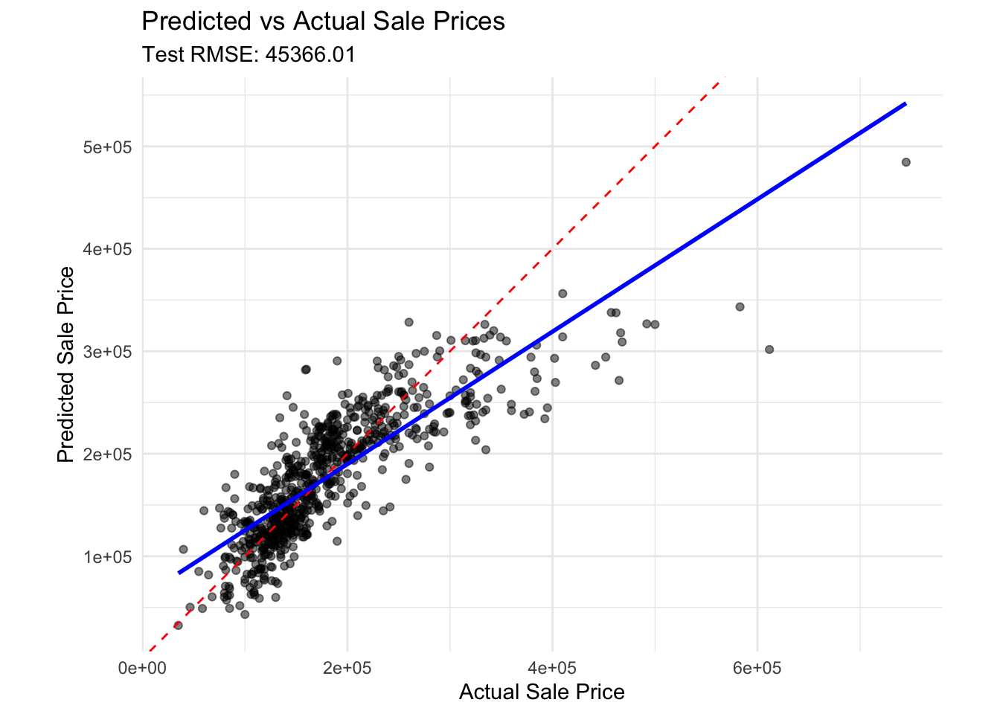
Classification Metrics
Let’s also explore classification metrics:
# Create a classification problem
ames_class <- ames_train %>%
mutate(expensive = factor(if_else(Sale_Price > median(Sale_Price),
"yes", "no"))) %>%
select(-Sale_Price)
# Simple classification workflow
class_recipe <- recipe(expensive ~ Gr_Liv_Area + Overall_Cond + Year_Built,
data = ames_class) %>%
step_normalize(all_numeric_predictors())
class_spec <- logistic_reg() %>%
set_engine("glm")
class_workflow <- workflow() %>%
add_recipe(class_recipe) %>%
add_model(class_spec)
# Fit and predict
class_split <- initial_split(ames_class, strata = expensive)
class_train <- training(class_split)
class_test <- testing(class_split)
class_fit <- class_workflow %>%
fit(class_train)
class_predictions <- bind_cols(
class_test %>% select(expensive),
predict(class_fit, class_test),
predict(class_fit, class_test, type = "prob")
)
# Classification metrics
class_metrics <- metric_set(
accuracy,
precision,
recall,
f_meas,
roc_auc,
pr_auc
)
class_performance <- class_predictions %>%
class_metrics(truth = expensive, estimate = .pred_class, .pred_yes)
print(class_performance)# A tibble: 6 × 3
.metric .estimator .estimate
<chr> <chr> <dbl>
1 accuracy binary 0.885
2 precision binary 0.902
3 recall binary 0.865
4 f_meas binary 0.883
5 roc_auc binary 0.0380
6 pr_auc binary 0.310 # Confusion matrix
conf_matrix <- class_predictions %>%
conf_mat(truth = expensive, estimate = .pred_class)
autoplot(conf_matrix, type = "heatmap") +
labs(title = "Confusion Matrix")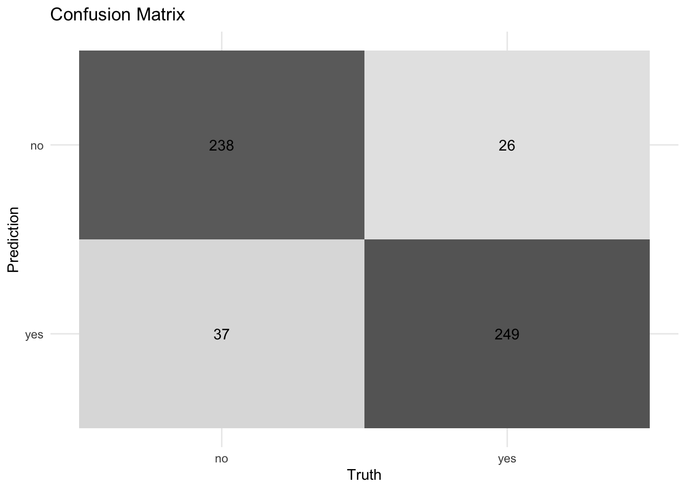
# ROC curve
roc_curve_data <- class_predictions %>%
roc_curve(truth = expensive, .pred_yes)
autoplot(roc_curve_data) +
labs(title = "ROC Curve") +
annotate("text", x = 0.5, y = 0.5,
label = paste("AUC:", round(class_performance$.estimate[5], 3)))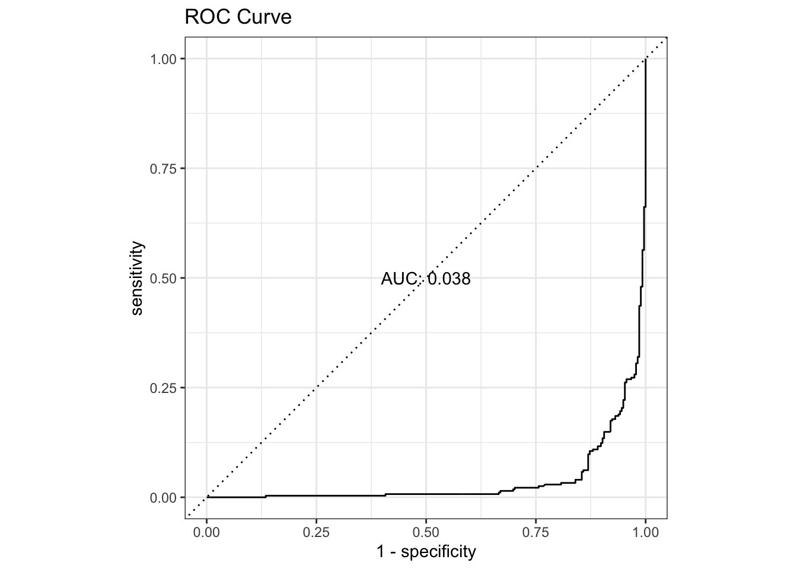
Custom Metrics and Evaluation
Sometimes you need custom metrics for your specific problem:
# Create a custom metric - Mean Absolute Percentage Error with threshold
mape_vec_threshold <- function(truth, estimate, threshold = 0.2, na_rm = TRUE) {
errors <- abs((truth - estimate) / truth)
errors[errors > threshold] <- threshold # Cap errors at threshold
mean(errors, na.rm = na_rm)
}
# Use the custom metric directly
custom_mape <- test_predictions %>%
summarise(
custom_mape = mape_vec_threshold(Sale_Price, .pred),
regular_mape = mean(abs((Sale_Price - .pred) / Sale_Price))
)
print(custom_mape)# A tibble: 1 × 2
custom_mape regular_mape
<dbl> <dbl>
1 0.127 0.176# Create a business-specific metric
# For example: penalize underestimation more than overestimation
asymmetric_loss <- function(truth, estimate, under_weight = 2) {
errors <- truth - estimate
result <- ifelse(errors > 0,
under_weight * errors^2, # Underestimation penalty
errors^2) # Overestimation penalty
sqrt(mean(result))
}
# Apply custom metric
test_predictions %>%
mutate(
asymmetric_rmse = asymmetric_loss(Sale_Price, .pred)
) %>%
summarise(
regular_rmse = rmse_vec(Sale_Price, .pred),
asymmetric_rmse = mean(asymmetric_rmse)
)# A tibble: 1 × 2
regular_rmse asymmetric_rmse
<dbl> <dbl>
1 45366. 59141.Advanced Workflow Techniques
Extracting and Modifying Fitted Workflows
# Extract components from fitted workflow
extracted_recipe <- lm_fit %>%
extract_recipe()
extracted_model <- lm_fit %>%
extract_fit_parsnip()
# Get preprocessing results
preprocessed_data <- lm_fit %>%
extract_recipe() %>%
bake(new_data = ames_test)
head(preprocessed_data)# A tibble: 6 × 32
Gr_Liv_Area Year_Built Total_Bsmt_SF Sale_Price Neighborhood_College_Creek
<dbl> <dbl> <dbl> <int> <dbl>
1 -1.18 -0.353 -0.364 105000 0
2 -0.337 -0.452 0.634 172000 0
3 0.247 0.836 -0.262 189900 0
4 0.198 0.869 -0.266 195500 0
5 -0.433 0.671 0.525 191500 0
6 0.588 0.902 -0.114 189000 0
# ℹ 27 more variables: Neighborhood_Old_Town <dbl>, Neighborhood_Edwards <dbl>,
# Neighborhood_Somerset <dbl>, Neighborhood_Northridge_Heights <dbl>,
# Neighborhood_Gilbert <dbl>, Neighborhood_Sawyer <dbl>,
# Neighborhood_Northwest_Ames <dbl>, Neighborhood_Sawyer_West <dbl>,
# Neighborhood_Mitchell <dbl>, Neighborhood_Brookside <dbl>,
# Neighborhood_Crawford <dbl>, Neighborhood_Iowa_DOT_and_Rail_Road <dbl>,
# Neighborhood_Timberland <dbl>, Neighborhood_Northridge <dbl>, …# Extract model coefficients
coefficients <- lm_fit %>%
extract_fit_parsnip() %>%
tidy()
head(coefficients)# A tibble: 6 × 5
term estimate std.error statistic p.value
<chr> <dbl> <dbl> <dbl> <dbl>
1 (Intercept) 164586. 2214. 74.3 0
2 Gr_Liv_Area 33020. 1003. 32.9 4.40e-193
3 Year_Built 16040. 1732. 9.26 4.64e- 20
4 Total_Bsmt_SF 15285. 1029. 14.9 1.28e- 47
5 Neighborhood_College_Creek 18650. 3982. 4.68 2.99e- 6
6 Neighborhood_Old_Town -1959. 4085. -0.480 6.32e- 1# Variable importance (if applicable)
# For models that support it
rf_workflow <- workflow() %>%
add_recipe(recipe_simple) %>%
add_model(rand_forest() %>% set_engine("ranger", importance = "impurity") %>% set_mode("regression"))
rf_fit <- rf_workflow %>%
fit(ames_train)
rf_importance <- rf_fit %>%
extract_fit_parsnip() %>%
vip()
print(rf_importance)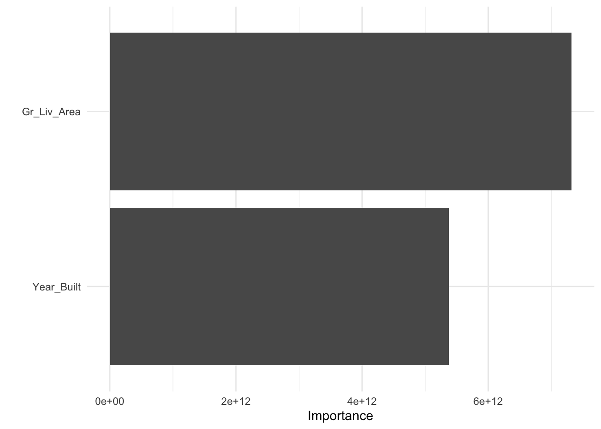
Workflow Finalization
After tuning (covered in next chapter), you finalize workflows:
# Example: Finalize a workflow with best parameters
# This would typically come from tuning
best_params <- tibble(
penalty = 0.01,
mixture = 0.5
)
# Create tunable workflow
tunable_spec <- linear_reg(
penalty = tune(),
mixture = tune()
) %>%
set_engine("glmnet")
tunable_workflow <- workflow() %>%
add_recipe(recipe_normalized) %>%
add_model(tunable_spec)
# Finalize with best parameters
final_workflow <- tunable_workflow %>%
finalize_workflow(best_params)
print(final_workflow)══ Workflow ════════════════════════════════════════════════════════════════════
Preprocessor: Recipe
Model: linear_reg()
── Preprocessor ────────────────────────────────────────────────────────────────
1 Recipe Step
• step_normalize()
── Model ───────────────────────────────────────────────────────────────────────
Linear Regression Model Specification (regression)
Main Arguments:
penalty = 0.01
mixture = 0.5
Computational engine: glmnet # Fit final model on all training data
final_fit <- final_workflow %>%
fit(ames_train)
# Last fit - train on all data, evaluate on test
last_fit_results <- final_workflow %>%
last_fit(split = ames_split, metrics = yardstick::metric_set(yardstick::rmse, yardstick::rsq))
# Extract final metrics
final_metrics <- last_fit_results %>%
collect_metrics()
print(final_metrics)# A tibble: 2 × 4
.metric .estimator .estimate .config
<chr> <chr> <dbl> <chr>
1 rmse standard 40233. pre0_mod0_post0
2 rsq standard 0.760 pre0_mod0_post0# Extract final model
final_model <- last_fit_results %>%
extract_workflow()Evaluating Model Assumptions
Workflows make it easy to check model assumptions:
# Residual analysis for regression
residual_analysis <- test_predictions %>%
mutate(
residual = Sale_Price - .pred,
std_residual = residual / sd(residual),
abs_residual = abs(residual)
)
# Residual plots
p1 <- ggplot(residual_analysis, aes(x = .pred, y = residual)) +
geom_point(alpha = 0.5) +
geom_hline(yintercept = 0, color = "red", linetype = "dashed") +
geom_smooth(se = FALSE, color = "blue") +
labs(title = "Residuals vs Fitted", x = "Fitted Values", y = "Residuals")
p2 <- ggplot(residual_analysis, aes(sample = std_residual)) +
stat_qq() +
stat_qq_line(color = "red") +
labs(title = "Q-Q Plot", x = "Theoretical Quantiles", y = "Standardized Residuals")
p3 <- ggplot(residual_analysis, aes(x = .pred, y = sqrt(abs_residual))) +
geom_point(alpha = 0.5) +
geom_smooth(se = FALSE, color = "blue") +
labs(title = "Scale-Location", x = "Fitted Values", y = "√|Residuals|")
p4 <- ggplot(residual_analysis, aes(x = residual)) +
geom_histogram(bins = 30, fill = "steelblue", alpha = 0.7) +
geom_density(aes(y = after_stat(count)), color = "red", linewidth = 1) +
labs(title = "Residual Distribution", x = "Residuals", y = "Count")
# Combine plots
(p1 + p2) / (p3 + p4) +
plot_annotation(title = "Regression Diagnostics")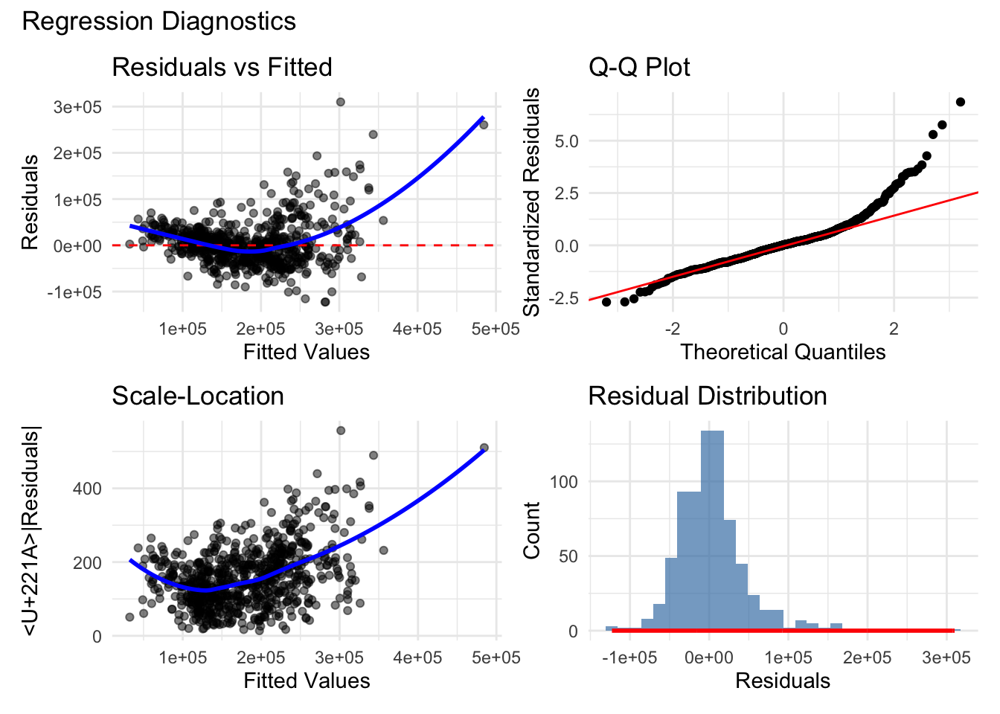
Probability Calibration
For classification, we often need well-calibrated probabilities:
# Calibration analysis
calibration_data <- class_predictions %>%
mutate(
prob_bin = cut(.pred_yes, breaks = seq(0, 1, 0.1), include.lowest = TRUE)
) %>%
group_by(prob_bin) %>%
summarise(
mean_predicted = mean(.pred_yes),
fraction_positive = mean(expensive == "yes"),
n = n(),
.groups = "drop"
) %>%
filter(n > 5) # Remove bins with few observations
# Calibration plot
ggplot(calibration_data, aes(x = mean_predicted, y = fraction_positive)) +
geom_abline(slope = 1, intercept = 0, linetype = "dashed", color = "gray50") +
geom_point(aes(size = n), color = "darkblue") +
geom_line(color = "darkblue") +
scale_size_continuous(range = c(2, 8)) +
labs(
title = "Probability Calibration Plot",
subtitle = "Well-calibrated models follow the diagonal",
x = "Mean Predicted Probability",
y = "Observed Frequency",
size = "Count"
) +
coord_equal() +
xlim(0, 1) + ylim(0, 1)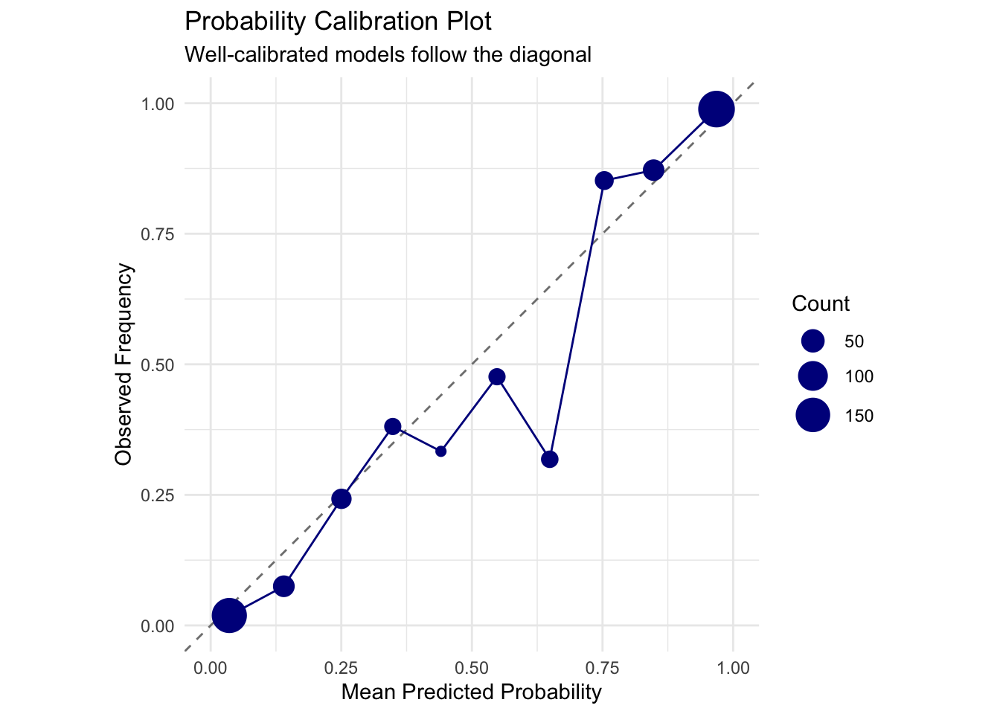
# Use probably package for calibration
library(probably)
# Simple calibration visualization
# We'll just show the calibration plot without the probably package functions
# that are causing issues
# Create a simple comparison
ggplot(calibration_data, aes(x = mean_predicted, y = fraction_positive)) +
geom_abline(slope = 1, intercept = 0, linetype = "dashed", color = "red", size = 1) +
geom_point(aes(size = n), color = "darkblue", alpha = 0.7) +
geom_smooth(method = "loess", se = FALSE, color = "blue") +
scale_size_continuous(range = c(2, 8)) +
labs(
title = "Model Calibration Assessment",
subtitle = "Points should follow the red diagonal for perfect calibration",
x = "Mean Predicted Probability",
y = "Observed Frequency",
size = "Count"
) +
coord_equal() +
xlim(0, 1) + ylim(0, 1) +
theme_minimal()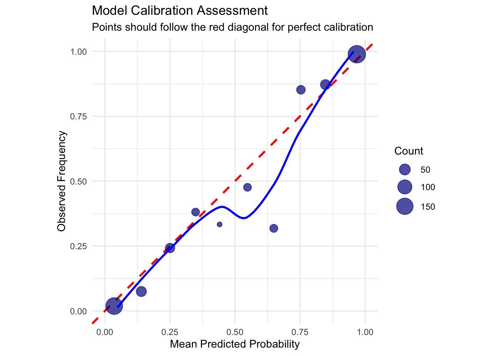
Performance Visualization
Create comprehensive performance visualizations:
# For regression: actual vs predicted with confidence bands
prediction_plot <- test_predictions %>%
ggplot(aes(x = Sale_Price, y = .pred)) +
geom_hex(bins = 30) +
geom_abline(slope = 1, intercept = 0, color = "red", linewidth = 1) +
geom_smooth(method = "lm", se = TRUE, color = "blue") +
scale_fill_viridis_c() +
labs(
title = "Prediction Accuracy",
subtitle = paste("R² =", round(rsq_vec(test_predictions$Sale_Price,
test_predictions$.pred), 3)),
x = "Actual Price",
y = "Predicted Price"
) +
coord_equal()
# Error distribution
error_plot <- test_predictions %>%
mutate(error = .pred - Sale_Price,
pct_error = error / Sale_Price * 100) %>%
ggplot(aes(x = pct_error)) +
geom_histogram(bins = 30, fill = "steelblue", alpha = 0.7) +
geom_vline(xintercept = 0, color = "red", linetype = "dashed") +
labs(
title = "Prediction Error Distribution",
subtitle = "Percentage error",
x = "Error (%)",
y = "Count"
)
prediction_plot + error_plot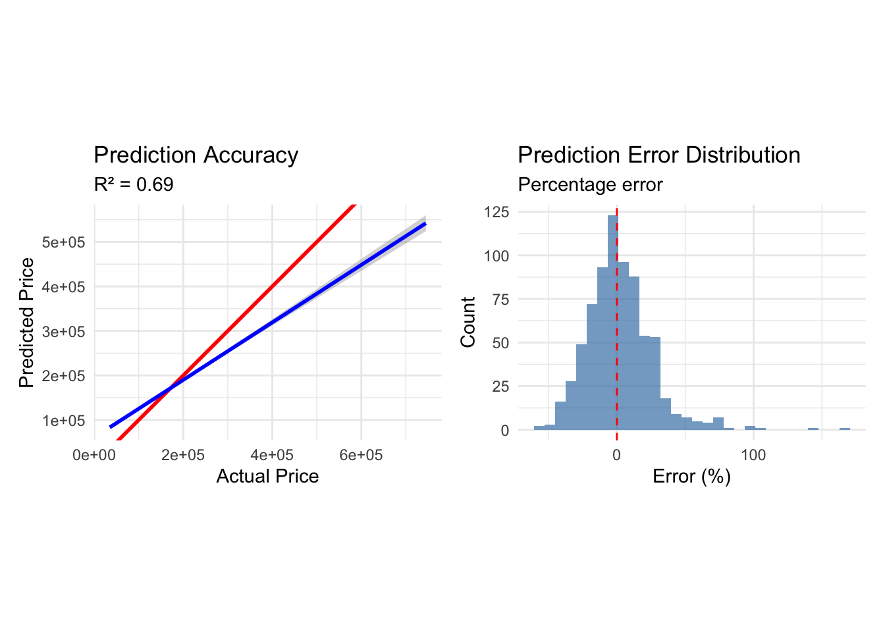
Best Practices for Workflows
1. Always Use Workflows for Production
# Good practice: Complete workflow
production_workflow <- workflow() %>%
add_recipe(
recipe(Sale_Price ~ ., data = ames_train) %>%
step_impute_median(all_numeric_predictors()) %>%
step_impute_mode(all_nominal_predictors()) %>%
step_normalize(all_numeric_predictors()) %>%
step_dummy(all_nominal_predictors())
) %>%
add_model(
linear_reg() %>% set_engine("lm")
)
# This ensures all preprocessing is contained and reproducible2. Version Control Your Workflows
# Save workflow for reproducibility
saveRDS(final_fit, "models/final_workflow_v1.rds")
# Load and use later
# loaded_workflow <- readRDS("models/final_workflow_v1.rds")
# new_predictions <- predict(loaded_workflow, new_data)3. Document Your Choices
# Create workflow with documentation
documented_workflow <- workflow() %>%
add_recipe(
recipe(Sale_Price ~ ., data = ames_train) %>%
# Handle missing values before other steps
step_impute_median(all_numeric_predictors()) %>%
# Normalize for model stability
step_normalize(all_numeric_predictors()) %>%
# Create dummies for linear model
step_dummy(all_nominal_predictors())
) %>%
add_model(
# Ridge regression to handle multicollinearity
linear_reg(penalty = 0.01, mixture = 0) %>%
set_engine("glmnet")
)Exercises
Exercise 1: Build a Complete Evaluation Pipeline
Create a workflow and comprehensive evaluation:
# Your solution
# Create a complete evaluation pipeline
eval_recipe <- recipe(Sale_Price ~ Gr_Liv_Area + Year_Built + Overall_Cond +
Neighborhood + Total_Bsmt_SF, data = ames_train) %>%
step_log(Sale_Price, skip = TRUE) %>% # Skip for prediction
step_impute_median(all_numeric_predictors()) %>%
step_normalize(all_numeric_predictors()) %>%
step_dummy(all_nominal_predictors())
eval_spec <- linear_reg(penalty = 0.01, mixture = 0.5) %>%
set_engine("glmnet")
eval_workflow <- workflow() %>%
add_recipe(eval_recipe) %>%
add_model(eval_spec)
# Fit with cross-validation
eval_folds <- vfold_cv(ames_train, v = 10, strata = Sale_Price)
eval_results <- eval_workflow %>%
fit_resamples(
resamples = eval_folds,
metrics = yardstick::metric_set(yardstick::rmse, yardstick::rsq, yardstick::mae, yardstick::mape),
control = control_resamples(save_pred = TRUE)
)
# Summarize performance
collect_metrics(eval_results)# A tibble: 4 × 6
.metric .estimator mean n std_err .config
<chr> <chr> <dbl> <int> <dbl> <chr>
1 mae standard 180453. 10 696. pre0_mod0_post0
2 mape standard 100.0 10 0.0000425 pre0_mod0_post0
3 rmse standard 197162. 10 1400. pre0_mod0_post0
4 rsq standard 0.764 10 0.0157 pre0_mod0_post0# Get predictions for visualization
eval_predictions <- collect_predictions(eval_results)
# Visualize CV performance
ggplot(eval_predictions, aes(x = Sale_Price, y = .pred)) +
geom_point(alpha = 0.1) +
geom_abline(slope = 1, intercept = 0, color = "red") +
facet_wrap(~id, ncol = 5) +
labs(title = "Predictions Across CV Folds")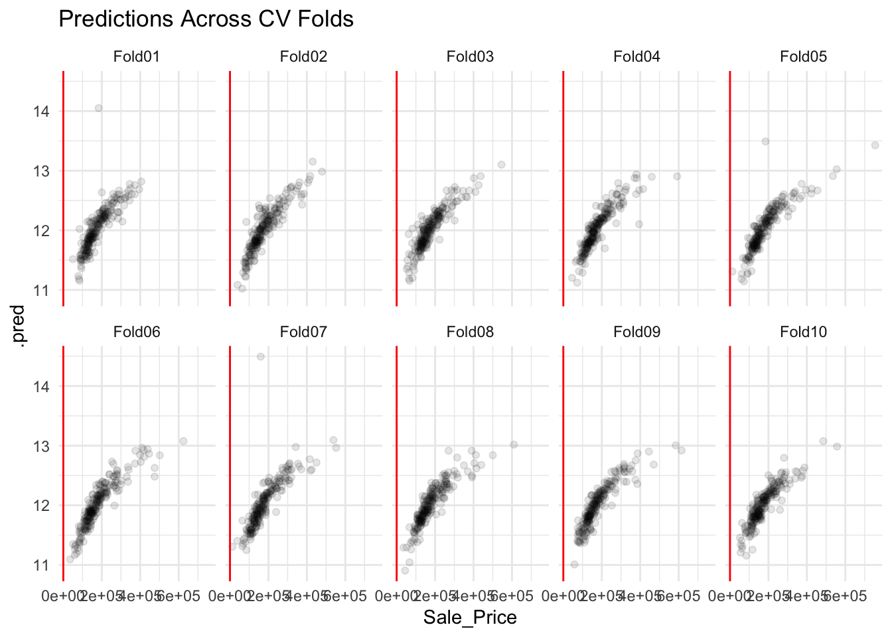
Exercise 2: Compare Preprocessing Strategies
Evaluate different preprocessing approaches:
# Your solution
# Define different preprocessing strategies
preproc_minimal <- recipe(Sale_Price ~ Gr_Liv_Area + Year_Built,
data = ames_train)
preproc_standard <- recipe(Sale_Price ~ Gr_Liv_Area + Year_Built + Total_Bsmt_SF,
data = ames_train) %>%
step_normalize(all_numeric_predictors())
preproc_complex <- recipe(Sale_Price ~ Gr_Liv_Area + Year_Built +
Neighborhood + Total_Bsmt_SF + Garage_Cars, data = ames_train) %>%
step_normalize(all_numeric_predictors()) %>%
step_dummy(all_nominal_predictors()) %>%
step_interact(terms = ~ Gr_Liv_Area:Year_Built)
# Create workflows
strategies <- list(
minimal = preproc_minimal,
standard = preproc_standard,
complex = preproc_complex
)
# Same model for all
model_spec <- linear_reg() %>% set_engine("lm")
# Create and evaluate workflows
strategy_results <- map_df(names(strategies), function(strategy_name) {
wf <- workflow() %>%
add_recipe(strategies[[strategy_name]]) %>%
add_model(model_spec)
# Fit and evaluate
fit_resamples(
wf,
resamples = vfold_cv(ames_train, v = 5),
metrics = yardstick::metric_set(yardstick::rmse, yardstick::rsq)
) %>%
collect_metrics() %>%
mutate(strategy = strategy_name)
})
# Compare strategies
ggplot(strategy_results, aes(x = strategy, y = mean, fill = strategy)) +
geom_col() +
geom_errorbar(aes(ymin = mean - std_err, ymax = mean + std_err), width = 0.2) +
facet_wrap(~.metric, scales = "free_y") +
labs(title = "Preprocessing Strategy Comparison") +
theme(legend.position = "none")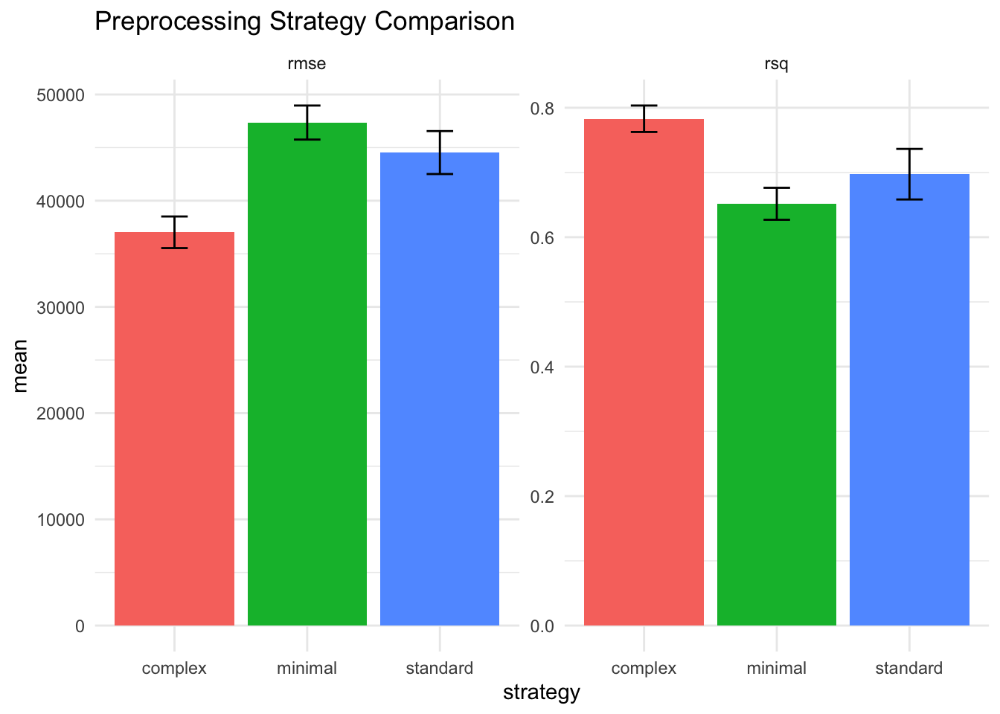
Exercise 3: Custom Metrics for Business Goals
Create business-specific metrics:
# Your solution
# Business scenario: Real estate company
# - Overestimating is bad (disappointed customers)
# - Underestimating by <5% is acceptable
# - Underestimating by >5% is very bad (lost opportunity)
business_metric <- function(truth, estimate) {
pct_error <- (estimate - truth) / truth * 100
penalties <- case_when(
pct_error > 0 ~ abs(pct_error) * 2, # Overestimate penalty
pct_error > -5 ~ abs(pct_error) * 0.5, # Small underestimate
TRUE ~ abs(pct_error) * 3 # Large underestimate penalty
)
mean(penalties)
}
# Apply to test predictions
test_predictions %>%
mutate(
business_score = business_metric(Sale_Price, .pred),
standard_mape = mape_vec(Sale_Price, .pred)
) %>%
summarise(
mean_business_score = mean(business_score),
mean_standard_mape = mean(standard_mape)
)# A tibble: 1 × 2
mean_business_score mean_standard_mape
<dbl> <dbl>
1 42.4 17.6# Visualize business metric
test_predictions %>%
mutate(
pct_error = (.pred - Sale_Price) / Sale_Price * 100,
error_category = case_when(
pct_error > 0 ~ "Overestimate",
pct_error > -5 ~ "Small Underestimate",
TRUE ~ "Large Underestimate"
)
) %>%
ggplot(aes(x = pct_error, fill = error_category)) +
geom_histogram(bins = 30, alpha = 0.7) +
scale_fill_manual(values = c(
"Overestimate" = "red",
"Small Underestimate" = "yellow",
"Large Underestimate" = "darkred"
)) +
labs(
title = "Business Impact of Prediction Errors",
x = "Percentage Error",
y = "Count",
fill = "Error Category"
)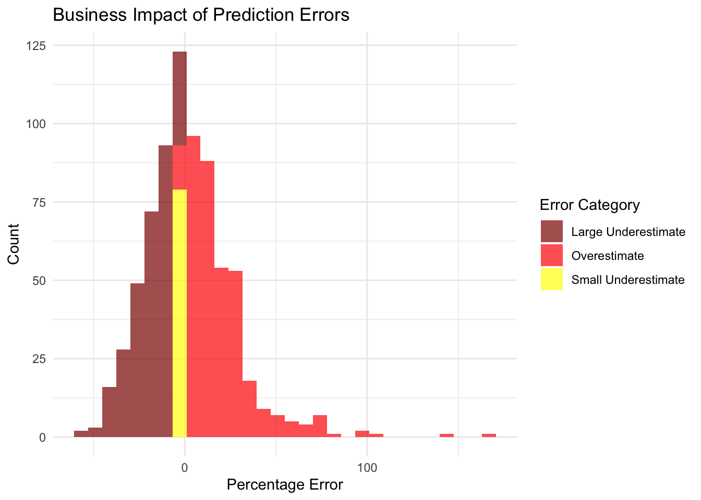
Summary
In this comprehensive chapter, you’ve mastered:
✅ Workflow fundamentals - Combining preprocessing and models - Preventing data leakage - Ensuring reproducibility
✅ Workflow components - Adding and updating recipes/models - Formula vs recipe interfaces - Modular design
✅ Workflow sets - Comparing multiple approaches - Systematic evaluation - Ranking and selection
✅ Model evaluation - Comprehensive metrics with yardstick - Custom metrics for business needs - Visualization techniques
✅ Advanced techniques - Extracting workflow components - Probability calibration - Model diagnostics
Key takeaways: - Always use workflows for production models - Workflows prevent data leakage automatically - Workflow sets enable systematic comparison - Custom metrics align models with business goals - Proper evaluation is crucial for model trust
What’s Next?
In Chapter 13, we’ll explore hyperparameter tuning to optimize model performance.